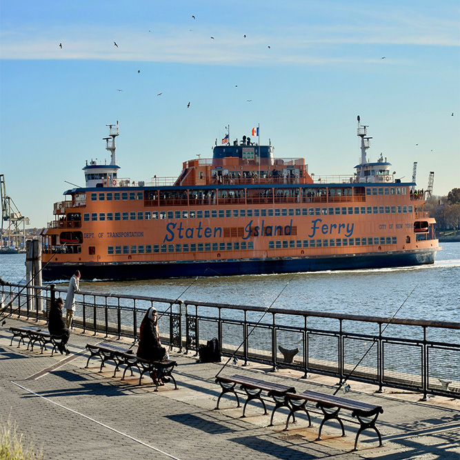

New York Harbor / Staten Island
Staten Island Ferry
A free ferry ride with stunning views of the New York City skyline.
The Staten Island Ferry links Manhattan and Staten Island across New York Harbor and offers free rides with stunning skyline views.

About
Built
The ferry started in 1817 with the Richmond Turnpike Company running service. Several mergers and sales later, the New York City government took control in 1905.
Today
Established in its modern form in the early 19th century, it remains one of the busiest ferry services in the U.S. today serving millions of passengers a year. Beyond its transit function, the ferry ride has become a scenic experience for visitors looking for views of the harbor and the Statue of Liberty in the distance.
Directions
For a trip starting in Manhattan, go to Whitehall Terminal at 4 South Street. The Staten Island end of the route is St. George Terminal at 1 Bay Street.